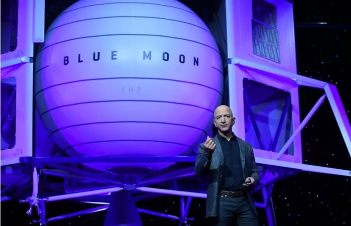

ከየፈርጁ

ሩሲያ ቢትኮይንን ለውጭ ንግድ ግብይት ለመቀበል እያሰበች መሆኑ ተነገረ

ሩሲያ ቢትኮይንን ለውጭ ንግድ ግብይት ለመቀበል እያሰበች መሆኑ ተነገረ

የ16 ዓመቱ ታዳጊ ሚሊየነር የመረጃ መረብ ሰርሳሪ ሊሆን ይችላል ተብሎ ተጠረጠረ
ሩሲያ ቢትኮይንን ለውጭ ንግድ ግብይት ለመቀበል እያሰበች መሆኑ ተነገረ
ሩሲያ ቢትኮይንን ለውጭ ንግድ ግብይት ለመቀበል እያሰበች መሆኑ ተነገረ

21 ሚያዝያ 2022
ጄፍ ቤዞስ ወደ ጨረቃ የሚያቀናው መንኮራኩር ምን ሊመስል እንደሚችል ይፋ ያደረገ ሲሆን እንደ አውሮፓውያን አቆጣጠር በ2024 መንኮራኩሩ እውን ይሆናል ተብሏል። ይህ ወደጨረቃ ለመጓጓዝ የሚውለው መሣሪያ የጠፈር ተመራማሪዎችንና የተለያዩ መገልገያዎችን ይጭናል። 'ብሉ ኦሪጅን' የተባለ ህዋ አሳሽ ድርጅት ያለው ጄፍ "ጨረቃ ላይ ተመልሰን መሄድ አለብን፤ አሁን ከሄድን መመለስም አያስፈልግም" ሲል ተናግሯል። አዲሱን መንኮራኩር በአሜሪካ ዋሽንግተን ዲሲ ውስጥ ያስተዋወቀው የናሳ አመራሮች በተገኙበት ነበር። መንኮራኩሩ ከመሬት ወደጨረቃ በቀጥታ ለመመንጠቅ በቂ ነዳጅ እንዳለው ተገልጿል። ከመሬት ሲነሳ 14,968 ኪሎ ግራም የሚመዝን ሲሆን፤ ጨረቃ ላይ ሊያርፍ ሲቃረብ ወደ 3,175 ኪሎ ይቀንሳል። መንኮራኩሩን በጨረቃ ደቡባዊ ክፍል ለማሳረፍ እቅድ ተይዟል። በጨረቃ ደቡባዊ ክፍል የበረዶ ቅንጣቶች እንደተገኙና፤ ከበረዶው ውሀ በማውጣት ከዛም ወደ ሀይድሮጅን በመቀየር መንኮራኩሩን በድጋሚ በነዳጅ መሙላት እንደሚቻል ተመላክቷል። ነዳጁ መሞላቱ መንኮራኩሩ በፀሀይ ዙሪያ ተጨማሪ እንቅስቃሴ እንዲያደርግ ያስችለዋል ተብሏል። የአሜሪካው ፕሬዝደንት ዶናልድ ትራምፕ የአሜሪካ ጠፈርተኞችን በ2024 ወደጨረቃ የመላክ እቅድ እንዳለ ተናግረው ነበር። ጄፍ ይህንን እቅድ እንደሚያሳኩትም ገልጿል። መንኮራኩሩ ከ2016 አንስቶ ግንባታው መጀመሩ እቅዳቸውን ለማሳካት እንደሚያግዛቸውም ጄፍ ተናግሯል። ጄፍ የሰው ልጅ በጠፈር ላይ የሚኖርበትና የሚሠራበት ዘመን ቅርብ ይሆን ዘንድ ከሚያደርገው ጥረት አንዱ ወደጨረቃ መጓዝን ቀላል ማድረግ ነው።